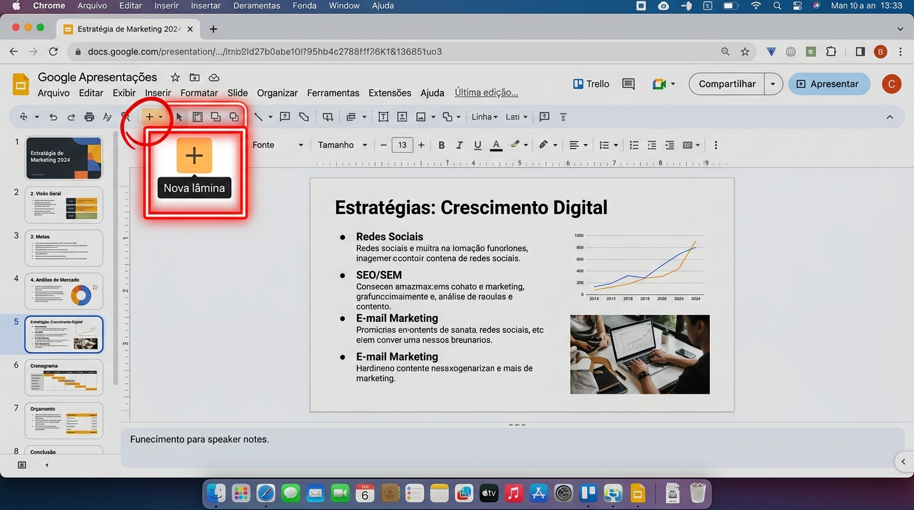
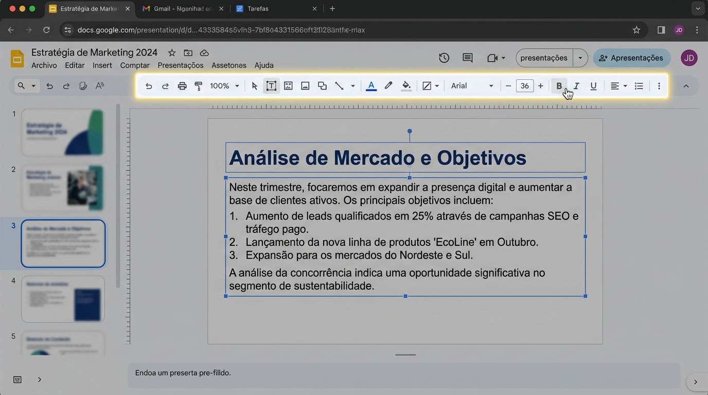
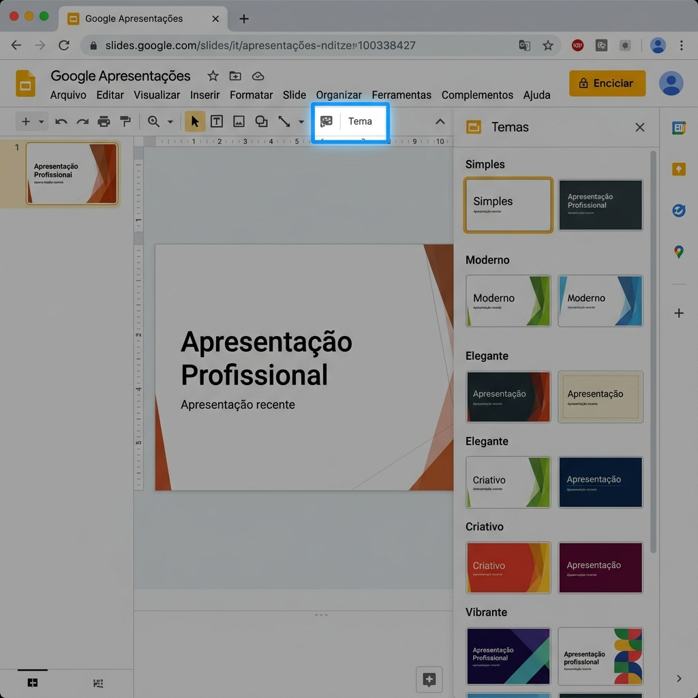
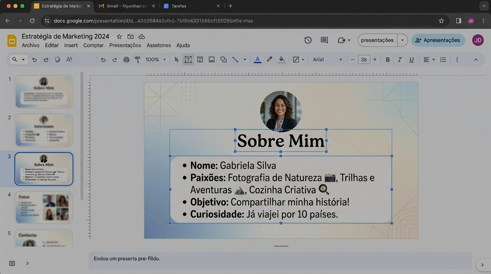

O Google Apresentações é um
criador de slides online e gratuito. Ele
funciona como um PowerPoint, mas salvo automaticamente na
nuvem. Serve para criar apresentações para
aulas, reuniões, seminários e trabalhos.
💡 O que você pode fazer
• Criar slides com textos, imagens e
vídeos
• Usar temas prontos com design
profissional
• Adicionar animações e
transições
• Apresentar em tela cheia
• Compartilhar e colaborar em tempo real
📝 Como acessar: Abra
o navegador e digite slides.google.com ou
acesse pelo Gmail → 9 pontinhos →
Apresentações.
03
CRIAR E ADICIONAR SLIDES
1
Criar Apresentação
Acesse slides.google.com e clique em
"Em branco". A primeira tela já é o slide 1.
2
Adicionar Slide
Clique no botão "+" na barra de ferramentas ou
use o menu Slide → Novo slide. Cada slide é uma
tela.
3
Escolher Layout
Cada slide tem um layout: título, título +
texto, título + imagem, em branco. Escolha o que melhor se
adapta ao conteúdo.

💡 Dica: Para
duplicar um slide, clique com botão direito na
miniatura → Duplicar slide. Útil para manter o
mesmo layout.
04
INSERIR TEXTOS E TÍTULOS
📝 Caixas de texto
• Cada slide tem caixas de texto prontas
• Clique para digitar o título e o conteúdo
• Para adicionar nova caixa:
Inserir → Caixa de texto
• Arraste as caixas para reposicionar
✏️ Formatando o texto
• Negrito: Ctrl + B
• Itálico: Ctrl + I
• Sublinhado: Ctrl + U
• Tamanho: selecione o número na barra
• Cor: clique no "A" colorido

05
APLICAR UM TEMA PRONTO
🎨 O que são temas
Temas são modelos de design prontos que
definem cores, fontes e layout de todos os slides. Aplicar um
tema deixa a apresentação com aparência
profissional sem precisar formatar slide por
slide.
📋 Passo a passo
1. Clique em "Tema" na barra
de ferramentas 2. Um painel lateral abre com vários temas 3. Clique no tema desejado para
pré-visualizar 4. O tema é aplicado a
todos os slides

06
APRESENTAR OS SLIDES
▶️
Iniciar
Clique no botão "Apresentar" no canto superior
direito. A tela fica cheia, mostrando apenas o
slide atual.
🔄
Navegar
Use as setas do teclado ou clique nas setas na
tela para avançar e voltar. Pressione Esc para
sair.
🗣️
Dicas
Fale de frente para a turma. Use os slides como
apoio visual, não leia tudo. Mantenha contato
visual com a plateia.
07
ATIVIDADES PRÁTICAS
1
Criar Apresentação
Acesse slides.google.com e crie uma
apresentação "Sobre Mim" com 3-4 slides:
• Slide 1: Título (seu nome)
• Slide 2: Quem sou
• Slide 3: Hobbies
• Slide 4: Metas
⏱️ 60 min
2
Inserir Imagens
Em cada slide, adicione uma
imagem relacionada ao conteúdo. Use
Inserir → Imagem → Pesquisar na web.
⏱️ 30 min
3
Aplicar Tema
Clique em "Tema" e escolha um design
profissional. Explore diferentes opções e escolha o que mais
combina com seu conteúdo.
⏱️ 15 min
4
Apresentar para Turma
Clique em "Apresentar" e mostre seus slides
para a turma. Fale de frente, use os slides como apoio visual.
⏱️ 15 min

📌 Orientação ao professor:
Crie um ambiente acolhedor para as apresentações. Elogie o esforço
de cada aluno e destaque os pontos fortes. Sugira melhorias de
forma construtiva. Este é o momento de celebrar o aprendizado do
curso.